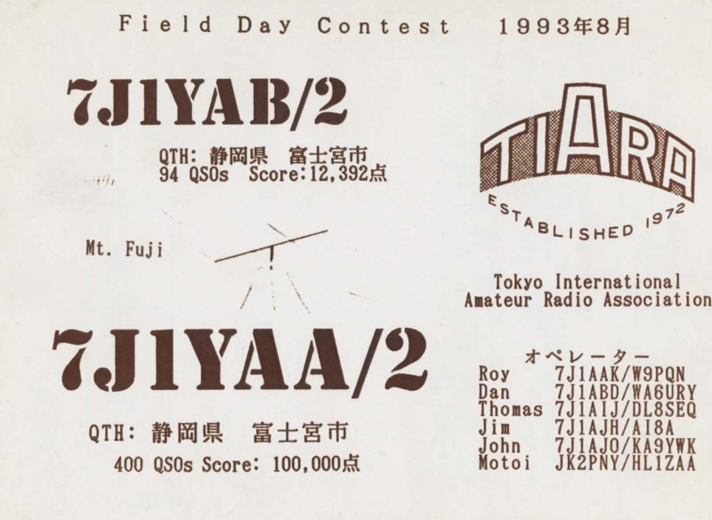
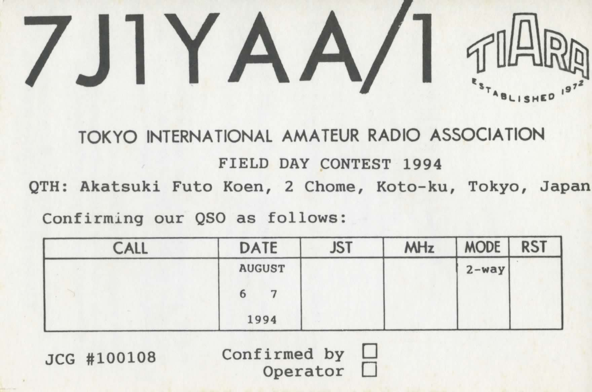
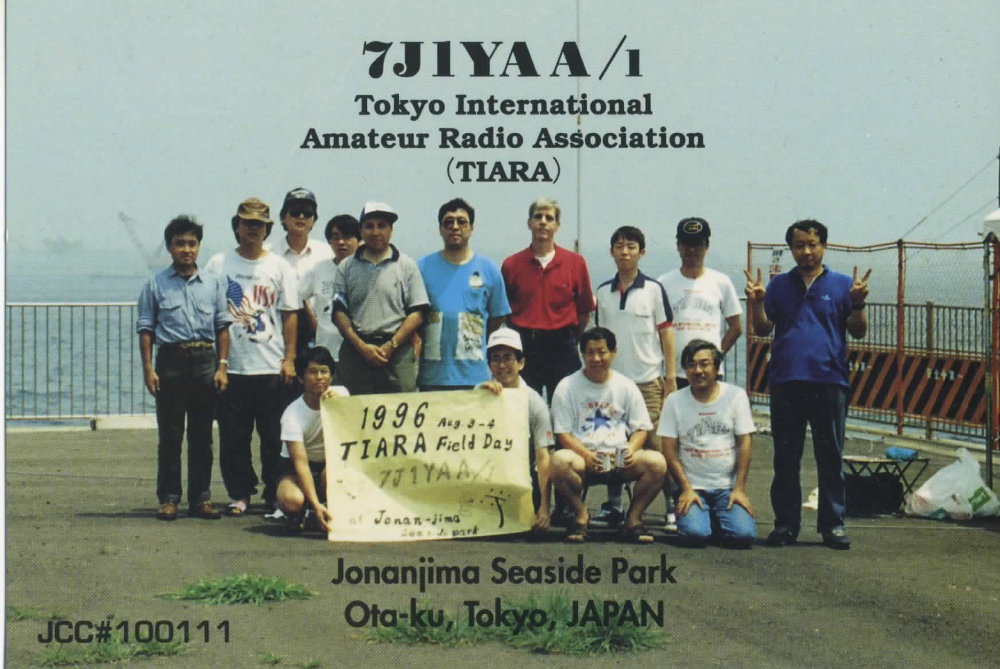
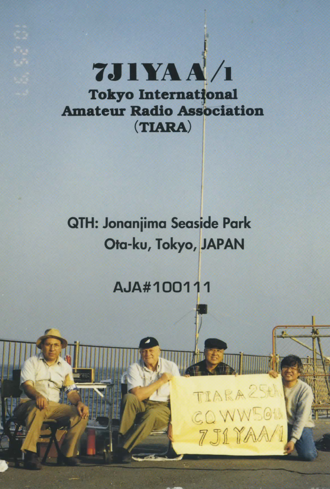
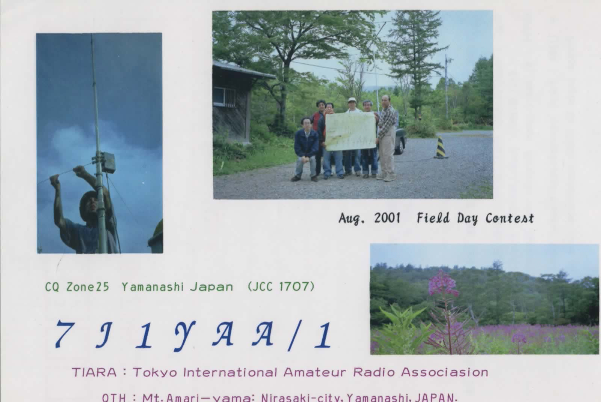
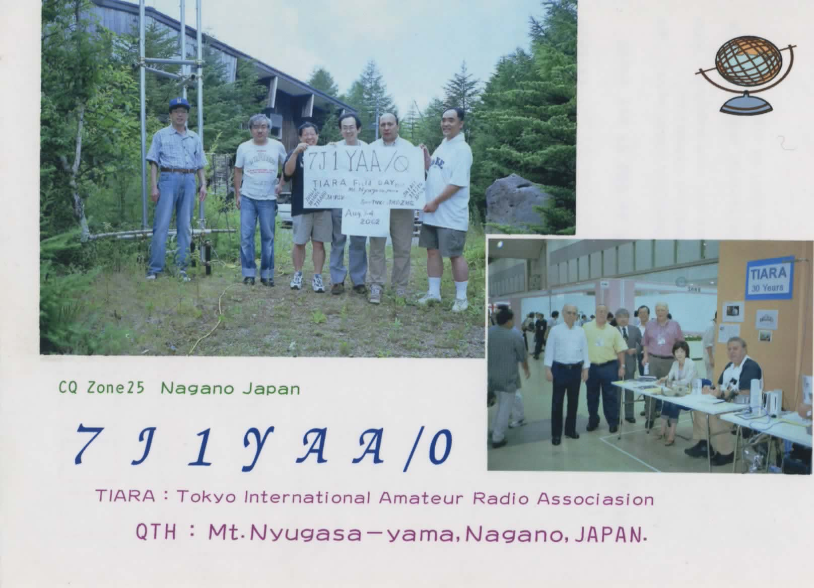

<table border="0" cellspacing="10">
  <tr>
    <td valign="top">
      <ul class="thumbnails">
        <li class="span4"><div class="thumbnail"><h3>1993</h3></div></li>
        <li class="span4"><div class="thumbnail"><h3>1994</h3></div></li>
        <li class="span4"><div class="thumbnail"><h3>1996</h3></div></li>
        <li class="span4"><div class="thumbnail"><h3>1997</h3></div></li>
        <li class="span4"><div class="thumbnail"><h3>2001</h3></div></li>
        <li class="span4"><div class="thumbnail"><h3>2002</h3></div></li>
      </ul>
    </td>
  </tr>
</table>
<hr>

<p>
<h6><!-- hhmts start -->
  Last modified: Thu Aug 23 13:23:16 NZT 2012
<!-- hhmts end --></h6>


